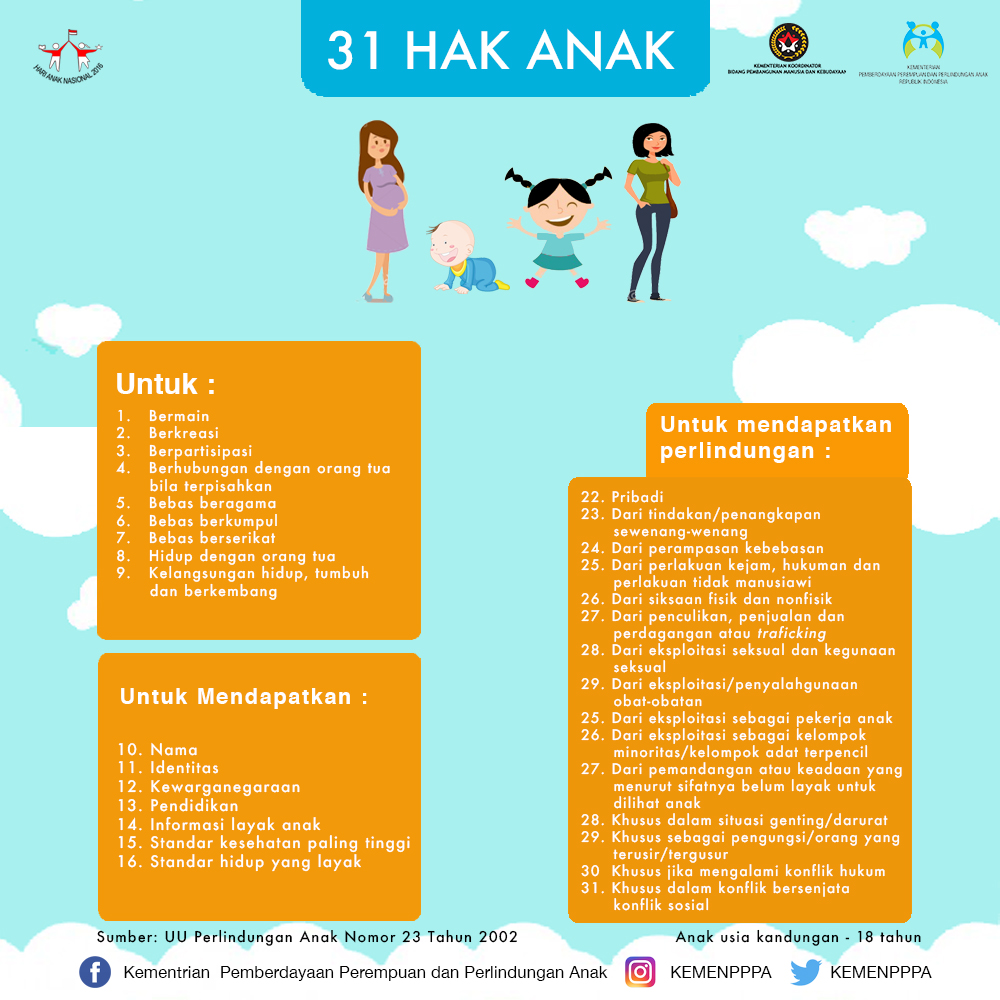

Tindak Kekerasan pada anak
Berdasarkan data yang di peroleh dari Komisi Perlindungan Anak Indonesia (KPAI). menyatakan bahwa kekerasan pada anak selalu meningkat setiap tahun.hasil pemantauan KPAI dari tahun 2011 sampai tahun 2014. di tahun 2011 terjadi sebanyak 2178 kasus di tahun 2012 terjadi sebanyak 3512 kasus, di tahun 2013 terjadi sebanyak 4311 kasus dan di tahun 2014 terjadi sebanyak 5066 kasus. Wakil Ketua KPAI, Maria Advianti mengatakan bahwa anak bisa menjadi korban ataupun pelaku kekerasan dengan lokasi kasus kekerasan pada anak ada 3 yaitu di lingkungan keluarga, di lingkungan sekolah dan di lingkungan masyarakat. Hasil monitoring dan evaluasi KPAI tahun 2012 di 9 provinsi menunjukkan bahwa 91 persen anak menjadi korban kekerasan di lingkungan keluarga, 87.6 persen di lingkungan sekolah dan 17.9 persen di lingkungan masyarakat. Harian Terbit, Minggu (14/6/2015).
peran penting anak
anak-anak Indonesia diharapkan dapat terpenuhi segala hak-haknya untuk tumbuh dan berkembang serta mendapatkan perlindungan dari segala bentuk kekerasan, eksploitasi, dan diskriminasi. Anak harus dipersiapkan semenjak dini agar kelak menjadi SDM yang berkarakter kuat, menguasai ilmu pengetahuan dan teknologi, unggul, berdaya saing, anak anak mempunyai hak hak untuk bermain berekreasi dan lain sebagainya
hukuman bagi pelaku kekerasan terhadap anak
Pasal 13 ayat (1) Undang-Undang Nomor 23 Tahun 2002 tentang Perlindungan Anak (“UU Perlindungan Anak”) sebagaimana
yang telah diubah oleh Undang-Undang Nomor 35 tahun 2014 tentang Perubahan Atas Undang-Undang Nomor 23 Tahun 2002
tentang Perlindungan Anak (“UU 35/2014”) yang menyatakan bahwa setiap anak selama dalam pengasuhan orang tua, wali, atau
pihak lain mana pun yang bertanggung jawab atas pengasuhan, berhak mendapat perlindungan dari perlakuan:
a. diskriminasi;
b. eksploitasi, baik ekonomi maupun seksual;
c. penelantaran;
d. kekejaman, kekerasan, dan penganiayaan;
e. ketidakadilan; dan
f. perlakuan salah lainnya.
Menurut yurisprudensi, yang dimaksud dengan kata penganiayaan yaitu sengaja menyebabkan perasaan tidak enak (penderitaan),
rasa sakit, atau luka. Contoh “rasa sakit” tersebut misalnya diakibatkan mencubit, mendupak, memukul, menempeleng, dan sebagainya.
Pasal yang Menjerat Pelaku Penganiayaan Anak
Menjawab pertanyaan Anda, pasal tentang penganiayaan anak ini diatur khusus dalam Pasal 76C UU 35/2014 yang berbunyi:
Setiap Orang dilarang menempatkan, membiarkan, melakukan, menyuruh melakukan, atau turut serta melakukan Kekerasan terhadap Anak.
Sementara, sanksi bagi orang yang melanggar pasal di atas (pelaku kekerasan/peganiayaan) ditentukan dalam Pasal 80 UU 35/2014:
(1) Setiap Orang yang melanggar ketentuan sebagaimana dimaksud dalam Pasal 76C, dipidana dengan pidana penjara paling lama 3 (tiga) tahun 6 (enam) bulan dan/atau denda paling banyak Rp72.000.000,00 (tujuh puluh dua juta rupiah).
(2) Dalam hal Anak sebagaimana dimaksud pada ayat (1) luka berat, maka pelaku dipidana dengan pidana penjara paling lama 5 (lima) tahun dan/atau denda paling banyak Rp100.000.000,00 (seratus juta rupiah).
(3) Dalam hal Anak sebagaimana dimaksud pada ayat (2) mati, maka pelaku dipidana dengan pidana penjara paling lama 15 (lima belas) tahun dan/atau denda paling banyak Rp3.000.000.000,00 (tiga miliar rupiah).
(4) Pidana ditambah sepertiga dari ketentuan sebagaimana dimaksud pada ayat (1), ayat (2), dan ayat apabila yang melakukan penganiayaan tersebut Orang Tuanya.